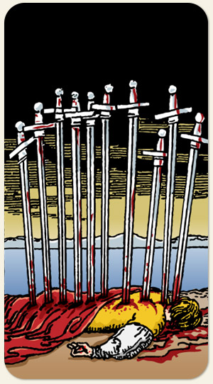

O Naipe de Espadas deseja estar certo, deseja vencer, a guerra representa o desfecho, a cena final, ou mata ou morre, alguém venceu e alguém perdeu, sem meio termo. O sangue no cabo de cada espada pode sugerir que não pertence ao homem que está no chão.
Positivo: A verdade prevalecendo, ideias sendo consagradas, o triunfo, a conquista apesar das dificuldades, organizar seu ponto de vista, o fim da oposição.
Negativo: Perda, ruína, a falta da razão, estupidez, tirania, usurpação, fazer pelas costas, atitudes sem honra, pensamento ou ação que dificulta o alvo de sua raiva, exaustão mental, baixa autoestima.
Símbolos: Homem Abatido, Espadas Fincadas, Capa Vermelha, Nascer do Sol, Mar Calmo, Montanhas, a Mão Direita de Papa.
Cores: Cor, Cor, Cor, Cor.